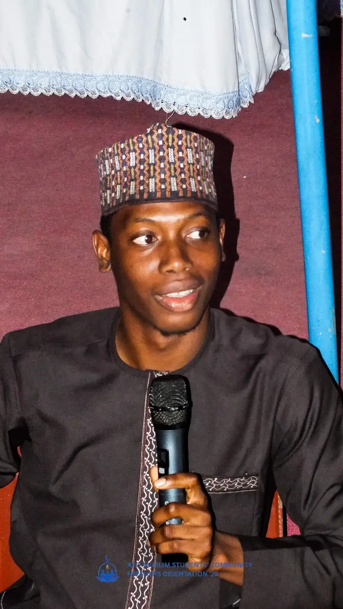
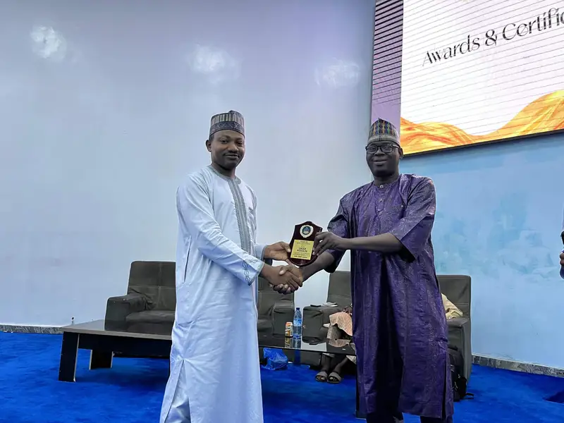
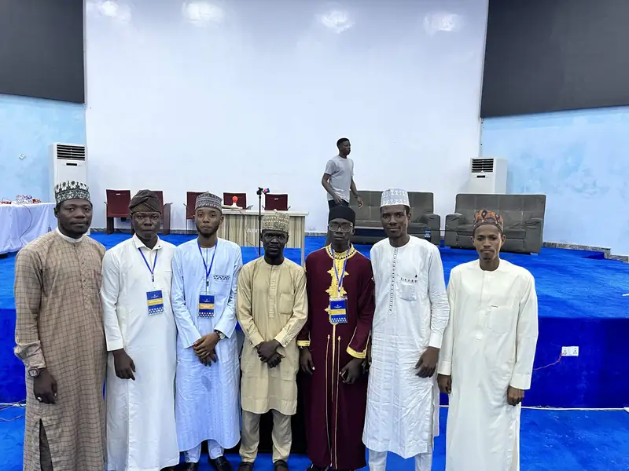
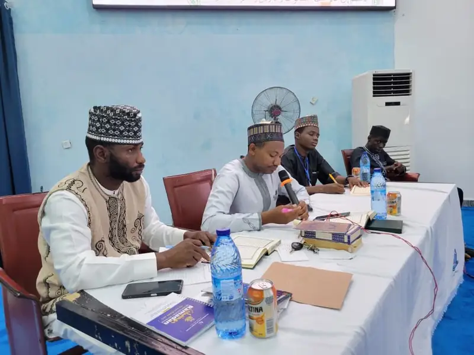
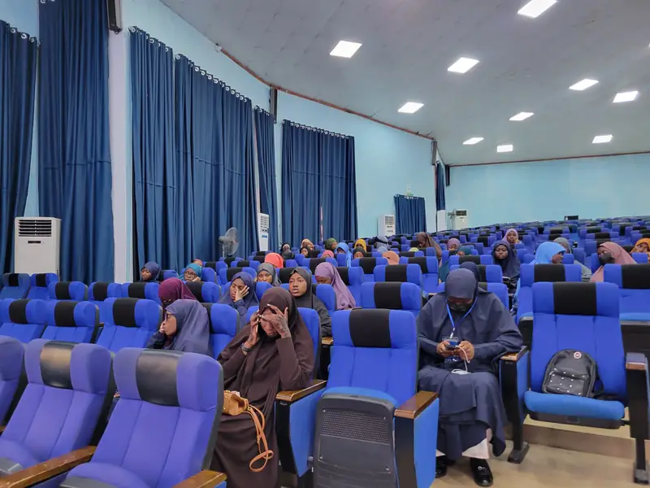
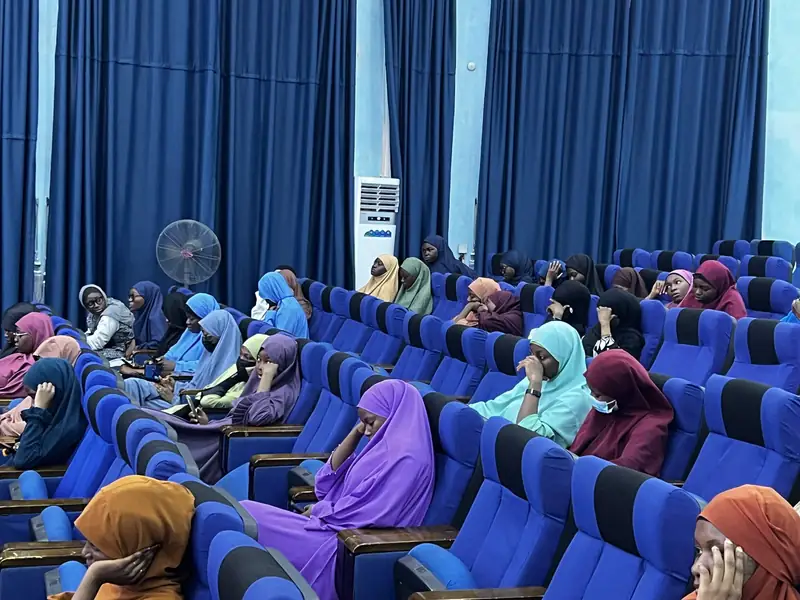
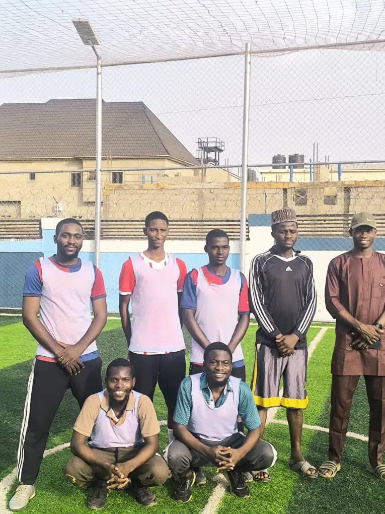
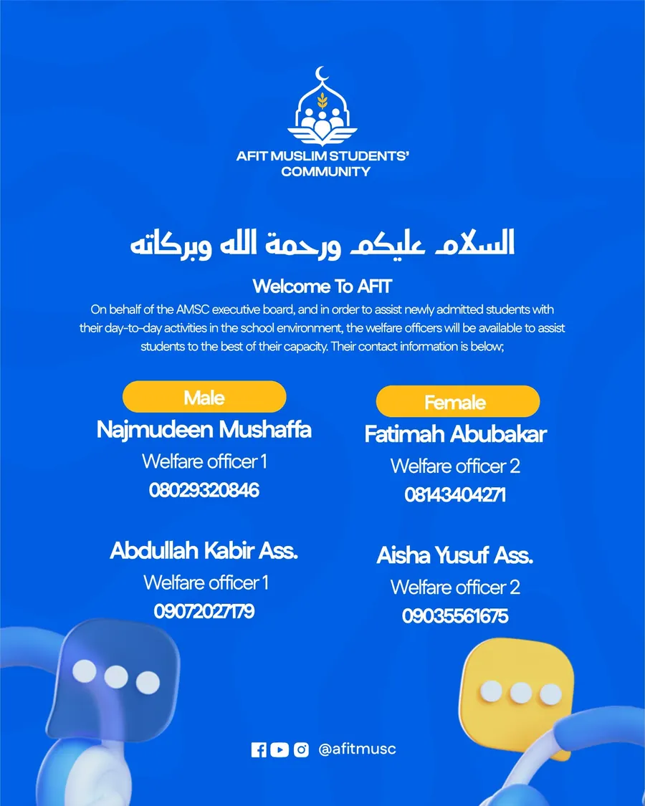
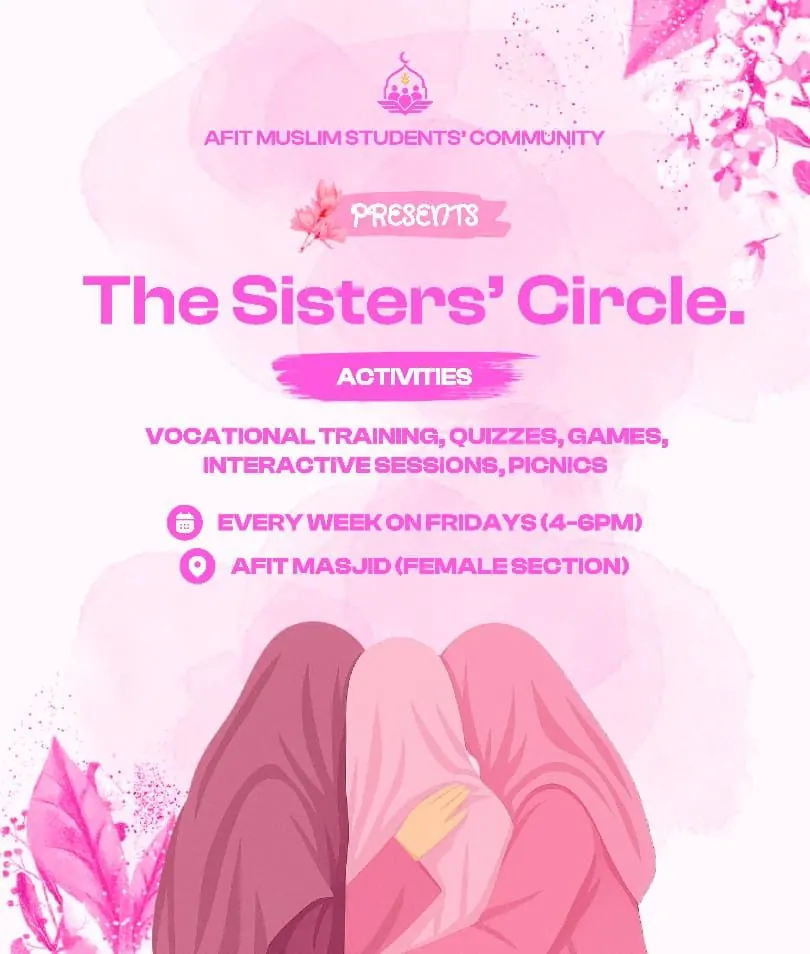

Gallery
Moments from AMSC programmes: lectures, the Musabaqatul Qur’an, orientation, sports and community gatherings.
Photographs by event
Moments from our programmes, grouped by event. Full albums open in Google Photos.
Freshers’ Orientation
Welcoming new Muslim students to AFIT each session.
2025/1447 8 November 2025, Mosugu Hall



2024/1446


5th Annual Musabaqatul Qur’an
Preliminaries and the grand finale at the Ibrahim Alfa Hall, 9 May 2026.







FYB Sendforth Walimah
Sending forth our final-year brothers and sisters, with invited guests.

Community and sports
Everyday moments across the session.


Albums and channels
Every photograph from our major programmes, and coverage as it happens.
Freshers’ Orientation 2025/1447
The full album from the orientation on 8 November 2025.
(opens in a new tab)Musabaqatul Qur’an
The full album from the fifth edition, 9 May 2026.
(opens in a new tab)Announcements, recaps and recitation highlights, @afitmsc.
(opens in a new tab)Longer posts and event albums for the wider community.
(opens in a new tab)Photographs of sisters are published only with the permission of the sisters photographed.
Flyer archive
Announcements designed by the AMSC media team.

Welfare officers
Contacts for new students.

Freshers’ Orientation
Navigating campus, guided by Islam in every step.
Matriculation
Welcoming new students to the Institute.

IDIT 3.0
Four tracks, four weeks, fully online.

IDIT graduation
Beyond the Degree: positioning for the AI era.

World Hijab Day
More Than A Scarf.

Sisters Circle
Vocational training, quizzes, games, picnics.

5th Musabaqatul Qur’an
Grand finale, Ibrahim Alfa Hall.

FYB Sendforth Walimah
Networking, games, awards and giveaways.
Convocation
Marking the graduation of AMSC members.

AMAN
The AFIT Muslim Alumni Network.

PDFNest
Partnered to make your studies better.

Ask a question
Anonymous questions, answered in session.
For designers
Making a flyer for an AMSC programme? Use the official palette and fonts. One community, one look: it is how people recognise an announcement as ours before they read a word.
Palette and type
- Primary blue#0056CE
- Yellow#FCBA00
- Green#18C021
- White#FFFFFF
Clash Display for headlines. DM Sans for body text, at −3% letter spacing.
Blue leads. Yellow and green are accents.
Before you post
Nobody is photographed for publication without knowing. No image of a sister is published without her explicit permission. Anyone can ask for a photograph of themselves to be taken down, and it comes down without argument.
Photographs of guests and officials are cleared with them first, and no coverage of an Institute facility is published without the Institute’s approval.
Join the media team
Photographers, video editors, designers and developers. If you can hold a camera steady or push a commit, there is work for you here.